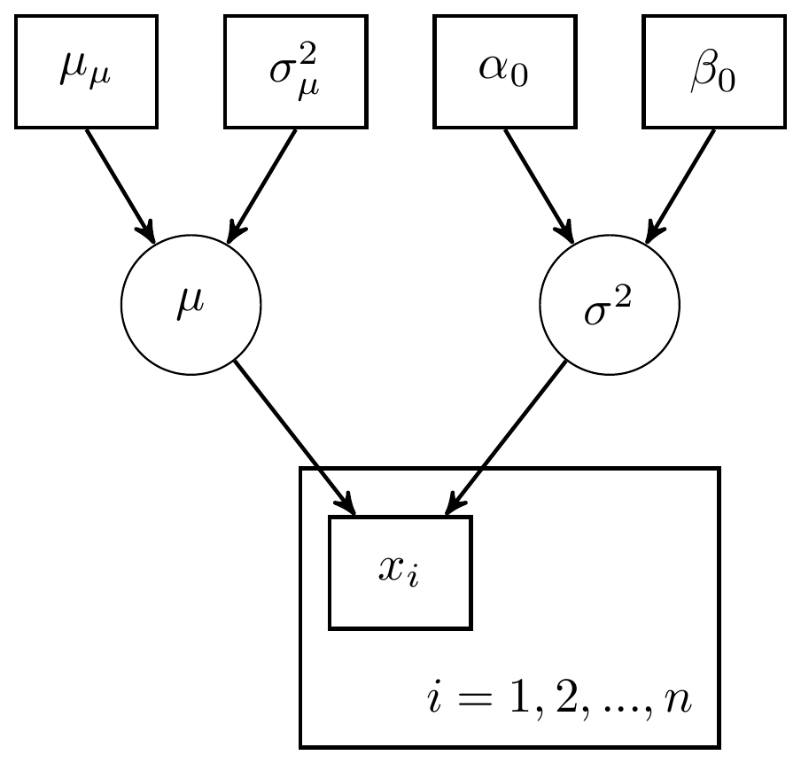
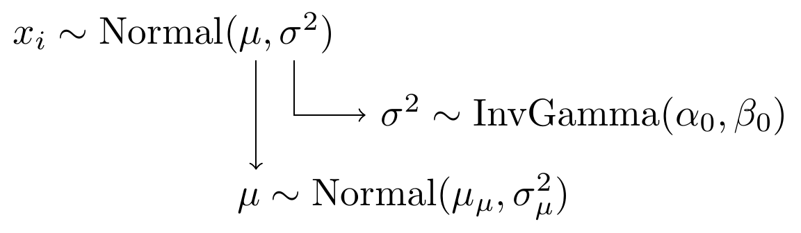
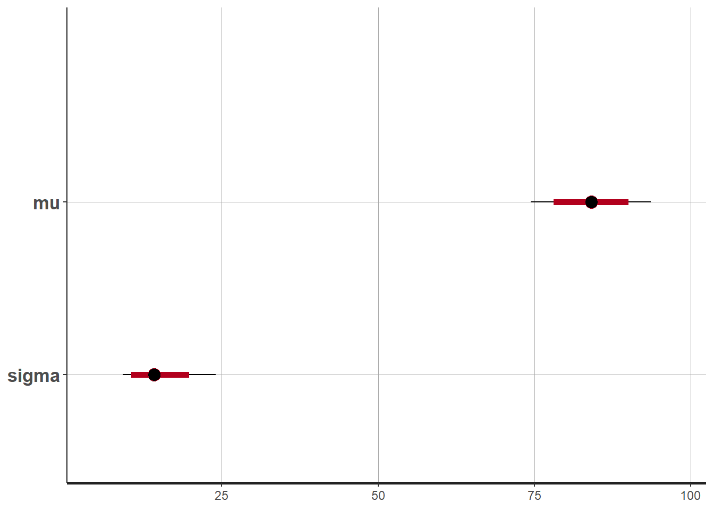
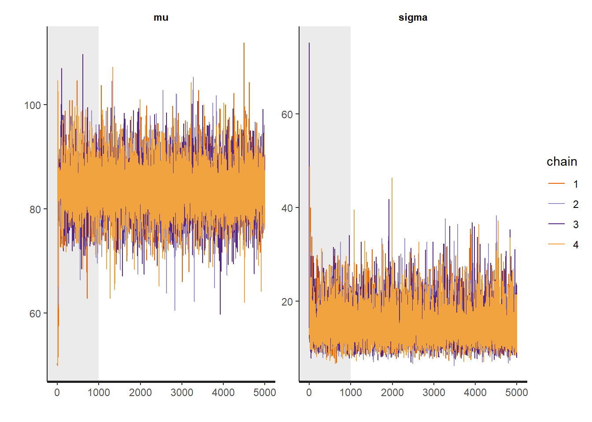
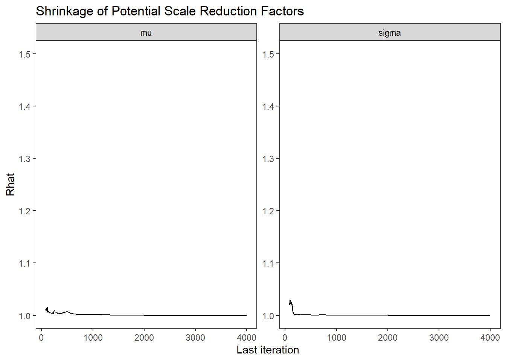
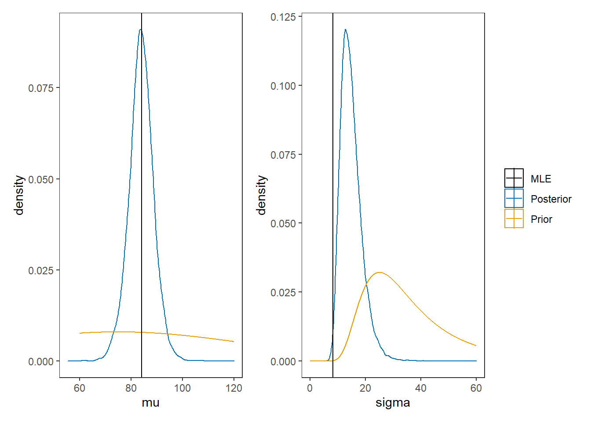

4.1 Stan Model for mean and variance unknown
The model for mean and variance unknown for normal sampling.

Figure 4.1: DAG with for mean and variance unknown: Variance parameterization
Or, alternatively,

Figure 4.2: Model specification diagram for normal model
model_normal <- '
data {
int N;
real x[N];
real mu0;
real sigma0;
real alpha0;
real beta0;
}
parameters {
real mu;
real<lower=0> sigma;
}
model {
x ~ normal(mu, sigma);
mu ~ normal(mu0, sigma0);
sigma ~ inv_gamma(alpha0, beta0);
}
'
# data must be in a list
mydata <- list(
N = 10,
x=c(91, 85, 72, 87, 71, 77, 88, 94, 84, 92),
mu0 = 75,
sigma0 = 50,
alpha0 = 5,
beta0 = 150
)
# start values
start_values <- function(){
list(mu=50, sigma=5)
}
# Next, need to fit the model
# I have explicited outlined some common parameters
fit <- stan(
model_code = model_normal, # model code to be compiled
data = mydata, # my data
init = start_values, # starting values
chains = 4, # number of Markov chains
warmup = 1000, # number of warm up iterations per chain
iter = 5000, # total number of iterations per chain
cores = 2, # number of cores (could use one per chain)
refresh = 0 # no progress shown
)## Warning in system(paste(CXX, ARGS), ignore.stdout = TRUE, ignore.stderr = TRUE):
## '-E' not found## Inference for Stan model: 682d92f82066fa7e19436da3c3fccc69.
## 4 chains, each with iter=5000; warmup=1000; thin=1;
## post-warmup draws per chain=4000, total post-warmup draws=16000.
##
## mean se_mean sd 2.5% 25% 50% 75% 97.5% n_eff Rhat
## mu 83.94 0.05 4.81 74.06 80.98 83.96 86.95 93.40 9163 1
## sigma 14.77 0.04 3.79 9.22 12.07 14.16 16.82 23.86 9765 1
## lp__ -52.87 0.01 1.05 -55.60 -53.29 -52.56 -52.12 -51.83 6469 1
##
## Samples were drawn using NUTS(diag_e) at Fri Sep 18 09:58:45 2020.
## For each parameter, n_eff is a crude measure of effective sample size,
## and Rhat is the potential scale reduction factor on split chains (at
## convergence, Rhat=1).## ci_level: 0.8 (80% intervals)## outer_level: 0.95 (95% intervals)

# Gelman-Rubin-Brooks Convergence Criterion
# ggs_grb(ggs(fit)) +
# theme_bw() + theme(panel.grid = element_blank())
# autocorrelation
# ggs_autocorrelation(ggs(fit)) +
# theme_bw() + theme(panel.grid = element_blank())
# plot the posterior density
posterior <- as.matrix(fit)
plot_title <- ggtitle("Posterior distributions",
"with medians and 80% intervals")
mcmc_areas(
posterior,
pars = c("mu", "sigma"),
prob = 0.8) +
plot_title
# bivariate plot
posterior <- as.data.frame(posterior)
p <- ggplot(posterior, aes(x=mu, y=sigma))+
geom_point()+
theme_bw()+
theme(panel.grid = element_blank())
p
# I prefer a posterior plot that includes prior and MLE
MLE <- c(mean(mydata$x), sd(mydata$x))
prior_mu <- function(x){dnorm(x, 75, 50)}
x.mu <- seq(60.01, 120, 0.01)
prior.mu <- data.frame(mu=x.mu, dens.mu = prior_mu(x.mu))
prior_sig <- function(x){extraDistr::dinvgamma(x, 5, 150)}
x.sig <- seq(0.01, 60, 0.01)
prior.sig <- data.frame(sigma=x.sig, dens.sig = prior_sig(x.sig))
cols <- c("Posterior"="#0072B2", "Prior"="#E69F00", "MLE"= "black")#"#56B4E9", "#E69F00" "#CC79A7"
p1 <- ggplot()+
geom_density(data=posterior,
aes(x=mu, color="Posterior"))+
geom_line(data=prior.mu,
aes(x=x.mu, y=dens.mu, color="Prior"))+
geom_vline(aes(xintercept=MLE[1], color="MLE"))+
scale_color_manual(values=cols, name=NULL)+
theme_bw()+
theme(panel.grid = element_blank())
p2 <- ggplot()+
geom_density(data=posterior,
aes(x=sigma, color="Posterior"))+
geom_line(data=prior.sig,
aes(x=sigma, y=dens.sig, color="Prior"))+
geom_vline(aes(xintercept=MLE[2], color="MLE"))+
scale_color_manual(values=cols, name=NULL)+
theme_bw()+
theme(panel.grid = element_blank())
p1 + p2 + plot_layout(guides="collect")